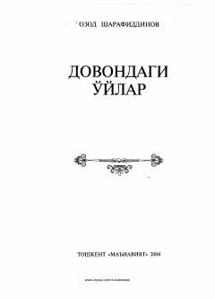

DOOzod Sharafiddinovning hayotiy mushohadalar va maʼnaviy mavzularga bagʻishlangan publitsistik asari.
Ushbu asar Oʻzbekiston Qahramoni, taniqli olim va adib Ozod Sharafiddinovning turli yillarda yozilgan publitsistik maqolalari va badiiy mushohadalarini oʻz ichiga oladi. Kitobda istiqlol davri, insoniy fazilatlar, maʼnaviy qadriyatlar hamda jamiyat hayotidagi muhim voqea-hodisalar chuqur tahlil qilinadi.